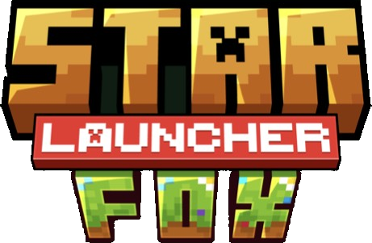
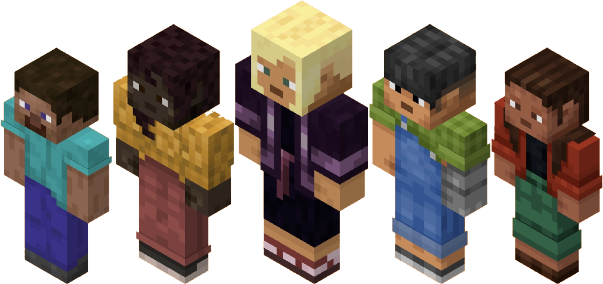

Launcher de MinecraftMinecraft, sin fricción.
5Loaders: Vanilla, Fabric,
Quilt, Forge y NeoForge
Quilt, Forge y NeoForge
12Temas para
personalizarlo
personalizarlo
Un launcher propio que instala, actualiza y lanza el juego por ti. Cualquier versión, con o sin mods — en un solo clic.
Desliza para descubrirDescarga StarFox Launcher
Todo Minecraft,
en un solo launcher
Jugar — un botón: la versión y el loader que elijas, listos para entrar al juego
Todo lo que un jugador necesita.
01
Versiones
Cada versión de Minecraft aislada y lista en un clic, de la clásica a la más nueva.
02
Mods
Modrinth integrado: buscas, instalas y las dependencias se resuelven solas.
03
Shaders
Se instalan y se activan sin tocar archivos ni carpetas.
04
Texturas
Modrinth y CurseForge en una sola búsqueda.
05
Mapas
El mundo se dibuja en tiempo real mientras juegas, solo o en cualquier servidor.
06
Cuentas
Inicia sesión con Microsoft, cambia de skin y vuelve a jugar sin pasos extra.

¿Jugamos?
Una demo en directo del launcher, cuando te venga bien.
Contáctanos